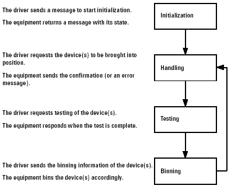

Principles of GPIB communication
The driver and equipment communicate with each other over the GPIB cable. The driver sends messages to the equipment with commands (for example, to start a test) or requests for information (for example, DUT identification). The figure below shows the basic principles of GPIB communication.
